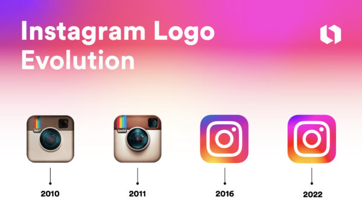

Historie sociální sítě
Vizuální revoluce a zrod profesionálních influencerů

- Rok založení
- 2010
- Zakladatelé
- Kevin Systrom a Mike Krieger
Vývoj loga Instagramu

Od Burbn k Instagramu
Předchůdcem Instagramu byla složitější mobilní aplikace Burbn, která kombinovala sdílení polohy, plánování schůzek a focení. Když tvůrci zjistili, že uživatelé nejvíce využívají sdílení fotografií z mobilních telefonů, rozhodli se aplikaci zjednodušit. Dne 6. října 2010 byl spuštěn Instagram. Jeho čtvercové fotografie a retro filtry pomohly proměnit i běžné mobilní snímky v osobitý obsah.
Od mobilních fotografií k videu
Instagram začínal jako aplikace pro iPhone, která nabízela rychlé pořízení fotografie, úpravu filtrem a sdílení s komunitou. Čtvercový formát odlišoval příspěvky od běžných fotografií z telefonu a filtry dodávaly snímkům jednotný vzhled. Po verzi pro Android v roce 2012 se služba otevřela mnohem širšímu okruhu uživatelů.
Po převzetí Facebookem se rozšířily možnosti sdílení a objevování obsahu. Instagram přidal video, přímé zprávy a v roce 2016 Stories – příspěvky, které po 24 hodinách zmizí. Tento formát přesunul část komunikace od trvalých fotografií k rychlým každodenním momentům.
Tvůrci, doporučování a nové formáty
Instagram postupně změnil způsob, jakým lidé sledují značky, umělce i známé osobnosti. Profily tvůrců, statistiky a reklamní nástroje umožnily vznik nové ekonomiky influencerů. Reels přinesly krátká videa a doporučovací systém začal vedle příspěvků sledovaných účtů nabízet i obsah od nových tvůrců.
Současný Instagram propojuje fotografie, videa, Stories, živé vysílání, zprávy a nakupování. Tato šíře funkcí zároveň vyvolává otázky, jak aplikace ovlivňuje pozornost a vnímání vlastního vzhledu, jak pracuje s osobními údaji a jak chrání mladší uživatele.
Klíčové milníky
-
2012 · Akvizice Facebookem
Dva roky po spuštění koupil Facebook Instagram za jednu miliardu dolarů. V té době měl Instagram přibližně 13 zaměstnanců.
-
2016 · Instagram Stories
Instagram představil příběhy, které po 24 hodinách zmizí. Nový formát navázal na rostoucí oblibu krátkodobých příspěvků.
-
2020 · Reels
Instagram spustil krátká vertikální videa Reels a rozšířil tak možnosti tvorby a objevování videoobsahu.
Vliv na společnost
Instagram proměnil marketing, cestovní ruch, gastronomii i módní průmysl. Pomohl vytvořit kulturu vizuálního obsahu a rozšířil profesi tvůrců obsahu neboli influencerů, pro které se focení a natáčení stalo zaměstnáním.